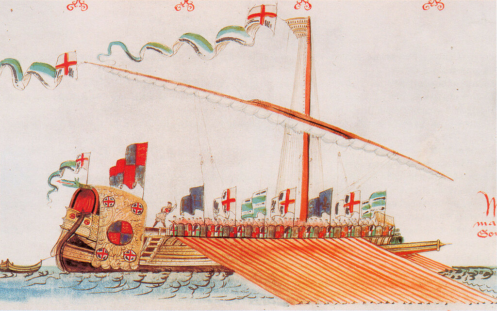

Английские галеры
«Что ж, бать, ты меня посылал на добычу; вон я мужика зарезал и всего-то луковицу нашел»
Ф. М. Достоевский. Записные книжки
Выше мы рассказали о попытках англичан в первые десятилетия эпохи Тюдоров создать у себя гребной флот. Выяснилось, что дело ограничилось применением весел на парусных кораблях в качестве вспомогательного движителя. Но когда обострилась угроза французского вторжения в Англию, Генрих VIII вынужден был еще раз вернуться к вопросу о строительстве галер в своем флоте. Мы уже писали, что, готовясь к нападению, Генрих приказал возвести оборонительные береговые укрепления и построить гребные суда для противодействия французским галерам. Корабельные мастера, имеющие опыт строительства галер, были наняты в Италии, чтобы осуществить личный проект короля и «построить гребные корабли согласно модели, которую он сам изобрел». Ценные данные о конструкции галер англичане получили после захвата в 1542 г. у побережья Дартмута французской галеры La Ferroniere, на борту которой находился племянник командующего галерным флотом Франции Прежана де Биду Пьер, Sieur de L'Artigue. Столкнувшись с перспективой длительного заключения, де Л’Артиг обменял свои знания на свободу, оказав помощь английскому королю в сборке единственной настоящей галеры в его флоте. Другие попытки ввести в состав английского флота галеры (в частности, как мы уже упоминали, купить в 1544 г. десять галер у Карла V) оказались безуспешными.

Первая галера, которую построили англичане, получила название The Galley Subtile. Читатели моих предыдущих рассказов о средиземноморских галерах без труда обнаружат в этом названии итальянские корни: galea sottile, именно так называли стандартный тип средиземноморской галеры той эпохи. Это, конечно, совсем не случайное совпадение.
Иностранное влияние при создании этого корабля очевидно, оно подтверждается сохранившимися счетами на оплату труда пяти венецианцев в 1541 году по строительству «a galley subtell», и, в другом документе “the Gallye Suttell”. Ноый корабль был спущен на воду в июле 1543 года и успел принять участие в английской экспедиции против шотландского Лита в мае следующего года. Первые несколько месяцев после спуска на воду галерой командовал английский капитан Richard Broke, затем его сменил капитан-испанец, а затем – венецианский патрон, при котором состоял переводчик-англичанин. Когда экипаж освоил все премудрости галерного мастерства, к командованию в 1546 году вновь вернулся Ричард Броук.
Водоизмещение первой английской галеры составляло 200 тонн, экипаж состоял из 242 моряков и 8 артиллеристов. Галера несла латинский парус на единственной мачте и имела по 25 весел с каждого борта. Гребцы были защищены от огня и стрел противника рядом щитов, расположенных вдоль каждого борта. В носу крепился брус, заостренный на случай тарана корабля противника, над ним располагалось основное оружие галеры – куршейная пушка и две сакры, все орудия изготавливались из бронзы. Кроме того, на борту имелось до 28 железных вертлюжных орудий малого калибра.
За время своей жизни в рядах английского флота, ориентировочно до 1560 года, галера Galley Subtile носила и другие названия: English или Red Galley. Об обстоятельствах смены названия мы расскажем ниже.
Вторая галера английского флота, так уж получилось, числилась в списках недолго. В мае 1546 года англичанам удалось захватить французскую галеру. В ходе допроса ее гребцов в присутствии капитана The Galley Subtile и членов только что созданного Военно-морского комитета (Navy Board) выяснилось, что все они считают хозяином захваченной галеры некоего барона Бланшара, по имени которого и был назван захваченный приз. Так в составе английского флота появилась вторая галера - Galley Blanchard, с экипажем, составленным из пленных французов. На ее борту было 140 гребцов и 230 солдат. Большое количество солдат объясняется, видимо, тем, что данная галера использовалась в качестве десантного судна для высадки морских десантов на побережье.
Вторая галера числилась в списках флота недолго, так как французские власти обратились к англичанам с требованием вернуть приз, захват которого они считали незаконным. Не знаю, что двигало англичанами в этой истории, но в 1547 году по приказу короля галера Blanchard была возвращена французам, правда, без экипажа.
Еще одна захваченная у французов галера засветилась в списках английского флота под различными названиями. Когда в 1549 году Адмиралом проливов был назначен Томас Коттон, в списке переходящих под его начало кораблей значилась некая «бывшая французская галера». Вероятнее всего, она была захвачена в этом же году Уильямом Винтером у Леона Строцци в бою при Гернси. В дальнейшем галера появлялась в документах уже под названием Galley Mermaid, а также иногда как Black Galley, Черная галера, видимо для того, чтобы отличать ее от первой галеры Galley Subtile, которую также называли Red Galley, Красной галерой. Mermaid имела стандартные галерные характеристики, что можно установить по документам на ее обеспечение продовольствием и боеприпасами, однако история не сохранила для нас никаких сведений о ее боевом пути. Последнее упоминание ее встречается в записях сентября 1563 года.
В январе 1560 года англичане захватили еще две французских галеры, которые в английском флоте получили названия Speedwell и Tryright. О них также известно очень мало. По документам материально-технического снабжения можно установить, что на первой было 241 человек, а на второй – 253. Число весел равнялось 50. Можно отметить также, что Speedwell являлась единственной английской галерой, для которой документально подтверждено участие в морском бою с другими кораблями. Об этом рассказал член экипажа галеры некий Edmund Abbott, представший перед судом Норвича по обвинению в бродяжничестве. Аббот рассказал, что около года назад он был ранен осколком снаряда, когда его галера под командованием капитана Холдена была « matched and coupled with one of the French King's ships» где-то между островом Уайт и Портсмутом. Однако все попытки историков найти следы этого боя были безуспешны, так что не исключено, что упомянутый галерник был одним из многочисленных «детей лейтенанта Шмидта». Судьба Speedwell и Tryright неизвестна, последние упоминания о них мы находим в 1579 году.
Из одиннадцати английских галера эпохи Тюдоров, о которых сохранились хоть какие-то сведения, четыре были захвачены в боях у французов, т.е. силой оружия. Еще одна была получена из того же источника, но другим способом. В 1562 году принц Конде, начавший первую религиозную войну, передал в аренду англичанам несколько кораблей, в том числе одну галеру. Когда в следующем году договор принца с французами был аннулирован, галера осталась у англичан. В 1563 году, несмотря на сильные протечки в корпусе, ее перегнали из Гавра в Англию. В этой истории галера упоминается под именем Black Galley, но историки установили, что это была не упоминавшаяся нами ранее Mermaid, а другой корабль. Его дальнейшая история, уже под названием Eleanor, прослеживается до 1584 года, когда после произведенного ремонта галера получила название Bonavolia. Сохранилась записка корабельного мастера Джона Хокинса, производившего уничтожение старого табло с названием Eleanor и изготовление нового - Bonavolia. На галере было пятьдесят весел по три гребца на каждом. Помимо 150 гребцов на галере было 46 матросов, 4 артиллериста и 50 солдат, всего 250 человек. Галеру готовили к сражению с испанской Непобедимой Армадой в 1588 году, но она получила сильные повреждения во время шторма, была отбуксирована в Темзу, где и оставалась до 1599 года, когда отмечается ее последнее упоминание в списках флота. Почти 40 лет в строю – это для галеры сверхдолголетие.
Следующей галере английского флота – Mercury – повезло больше других в отношении сохранившихся о ней документов. Галера была построена на верфи в Дептфорде корабельным мастером Мэтью Бейкером в 1592 году. Она явилась очередным кораблем, который упоминали под именем Черная Галера (Black Galley), но в отличие от еще действующей галеры Bonavolia, которыю именовали 'the great black galley', Mercury называли 'the little galley'. Это была самая маленькая из всех английских галер, численность находящегося на ней личного состава не превышала 180 человек, в том числе не более 100 гребцов. Водоизмещение галеры оценивают в 80 тонн. Впоследствии, как пишет Оппенгейм в упоминавшейся выше книге, галера эта была переделана в пинас, но подтверждение этому факту в документах найти не удалось. Исключена из списков в 1599 году «за бесполезностью», хотя иногда еще выныривала на поверхность документальных источников как «сгнивший фрегат» вплоть до 1611 года.
И, наконец, четыре галеры с итальянскими именами Advantagia, Gallarita, Superlativa и Volatilia. Они были включены в состав флота по программе кораблестроения 1601 года: первые две в 1601 году, оставшиеся – в 1602. Отличались они друг от друга лишь небольшими деталями, имея по 100 тонн водоизмещения каждая с экипажами от 394 человек (Volatilia – 50 матросов, 10 артиллеристов, 118 солдат и 216 гребцов) до 446 человек (Superlativa - 50 матросов, 10 артиллеристов, 126 солдат и 260 гребцов). Вооружение их состояло из одной кулеврины, двух полукулеврин, двух сакр и двух фоглеров на каждой. Практически все они сгнили у причалов, так как взошедший на английский трон Яков I завершил в 1604 г. англо-испанскую войну, начавшуюся в 1585 году, и долгие годы уже не нуждался в услугах военного флота.
Обсуждение темы продолжим в следующий раз.